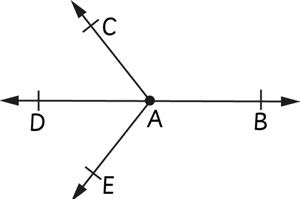
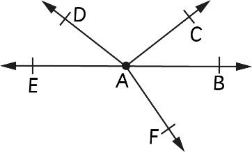

Kazi ya kufanya 3:Kuchora mwale
1.
Tumia rula kuchora kipande cha mstari AB.
2.
Endeleza kipande cha mstari AB upande wa kushoto au kulia, kisha kiwekee mshale kuonesha uelekeo.
3.
Rudia hatua ya 1 na 2 kuchora miale mitatu, kisha andika majina yake.
Mfano wa 1
Katika mchoro ufuatao ipi ni nukta ya mwisho wa mwale AC?

Jibu
Kwa kuwa nukta ya mwanzo katika mwale vilevile huitwa nukta ya mwisho, hivyo basi nukta A ni nukta ya mwisho ya mwale AC.
Mfano wa 2
Miale ipi ni kinyume cha mingine katika mchoro ufuatao?

Jibu
Mwale AB na mwale AE ipo kinyume cha mwingine katika mchoro.Miale yote miwili inaanzia katika nukta A na kuendelea upande kinyume unaofanya mstari mnyoofu EB.